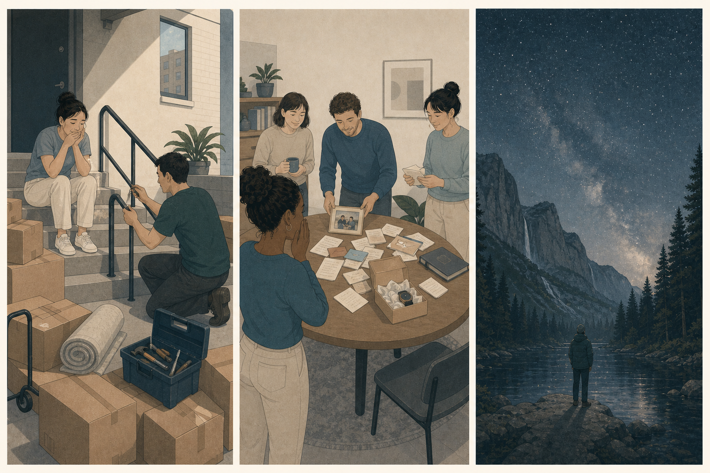
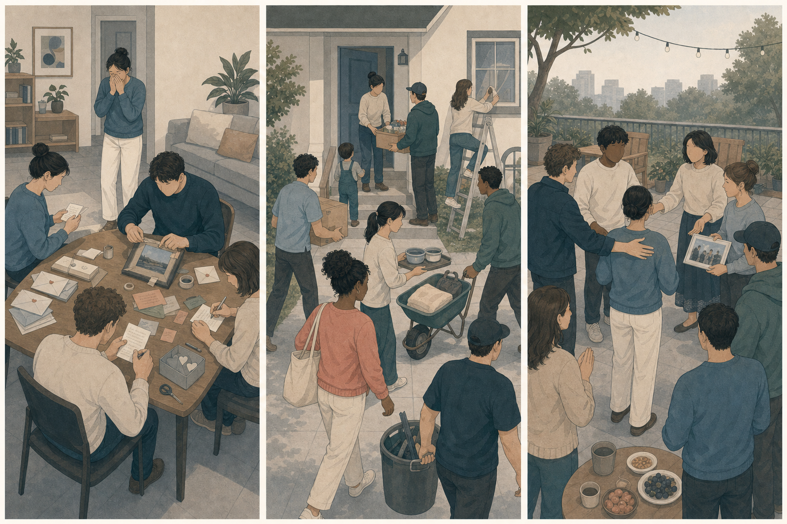

你搬家时临时受伤，邻居主动完成了最困难的部分，让事情没有停摆。
先判断，再展开
感激更突出。有明确给予者、具体帮助和对自己的实际益处。
OPTIONAL READING · BEYOND THE SELF
感激确认“别人为我带来了重要帮助”，感动回应“联结或关怀突然变得更强”，敬畏则出现在某种巨大、复杂或超出原有理解框架的事物面前。它们都可能让人眼眶发热，却指向不同对象。
READ FIRST · NAME SECOND
具体受益、联结增强和尺度扩展都可能让人停下来，但它们要求的回应不同。
感激更突出。有明确给予者、具体帮助和对自己的实际益处。
感动更突出，也可能感激。重点是突然看见关系中的关怀和共同联结比原先更强。
敬畏更突出。宏大与复杂超出原有参照，迫使理解框架调整。
EVENT FIRST
具体帮助、突然增强的联结、压倒日常尺度的世界，会把注意力推向不同方向。

ONE-MINUTE COMPARISON
有人出于善意给了我重要帮助。
感谢 · 回报 · 把善意传下去我突然看见联结、关怀或共同体变得更强。
靠近 · 拥抱 · 珍惜关系眼前事物太巨大或复杂，我原来的理解不够用了。
停下 · 重新定位自己 · 调整理解THREE BEYOND-SELF EMOTIONS
它们的共同点不是强烈身体反应，而是注意力暂时不再只围绕自己的得失。
GRATITUDE · 看见收到的善意与帮助
当你意识到某个具体的人或群体出于一定善意，为你带来了有价值的帮助或益处，注意力会从“事情解决了”转向“有人为我做了什么”，这就是感激。
谁给予了什么，这份帮助为什么对我重要，它是否超出纯粹义务。
他本可以不这样做，却为我投入了时间和心力。这真的帮到了我。
表达感谢、维护关系、适度回报，也可能更愿意把帮助传递给别人。
谁为我带来了什么具体益处，而这为什么值得被看见？
感激可以推动回报，但健康给予不会因此获得持续控制你的权利。感谢、互惠和个人边界可以同时存在。
BEING MOVED · 联结突然增强
当关怀、团结、重逢、接纳或共同价值在短时间内突然变得鲜明，人与人之间的联结仿佛迅速靠近，会出现温暖、眼眶发热或想靠近的感动。
什么关系、共同体或被珍视的价值突然变得更紧密。
原来他们一直记得。我们真的在彼此支持。这个人被重新接住了。
靠近、拥抱、分享、加入共同体，并保护这份刚被看见的联结。
哪段联结、关怀或共同价值，在这一刻突然变得更强？
不同语言对 being moved 的划分并不完全相同。感动可以同时包含喜悦、悲伤和感激；实用辨析的重点是关系或共同体联结是否突然增强。

AWE · 原有理解框架不够用了
当某种自然、知识、艺术、集体或力量在尺度与复杂性上超出日常参照，你需要调整原有理解才能容纳它，这种混合惊叹、渺小和不确定的体验就是敬畏。
眼前事物有多宏大或复杂，它怎样改变我对自己与世界位置的理解。
原来世界可以大到这种程度。我以前的框架解释不了。我需要重新看待它。
停下、凝视、探索、学习并重新定位自己；面对威胁性力量时也可能退缩。
什么东西大到或复杂到迫使我调整原来的理解？
壮丽景象可能令人舒展，巨大力量也可能让人害怕。宏大感与“需要调整理解框架”比单纯正负感受更接近敬畏的核心。
CASE ATLAS
有些体验让我们看见给予者、共同体和远大于自己的世界。
NEAREST NEIGHBORS
感激可以推动回报，但健康的帮助不会因为给予过就获得对你持续控制的权利。
关系增强的体验可以真实存在，同时仍然核对事实、代价和价值判断。
恐惧主要组织逃离威胁；敬畏还包含理解框架被迫扩展，可能推动凝视、探索和重新定位。
问：我想感谢一个具体给予者、靠近一段突然增强的联结，还是重新理解一个远大于自己的事物？
MIXED EMOTIONS
一次自然灾害让社区受损。邻居具体帮助你修复住处，更多陌生人迅速组成互助网络，而远处依然可见自然力量留下的巨大痕迹。
某些具体的人自愿提供帮助，真实改变了你的处境。
原本松散的人群突然形成强烈共同体联结。
自然力量的尺度超出日常理解，同时包含惊叹与恐惧。
同一事件可以把个人受益、群体联结和巨大尺度同时带入体验。
RETRIEVAL
先确定是具体给予、关系增强，还是理解框架被扩展。
同事在自己工作结束后，主动留下帮助你排查关键问题。
有明确给予者、自愿帮助和实际受益。
毕业多年后，全班为生病老师重新聚在一起，接力完成照料。
群体联结突然增强对应感动；老师作为受益者也可能对具体帮助感激。
第一次通过望远镜看见遥远星系，你感到自己很小，也想继续理解。
尺度超出原有框架，并推动重新定位与探索。
别人完成职责内的普通流程，你觉得结果理所应当，没有额外受益或善意判断。
“事情完成”不自动等于“我识别到对方自愿给予了有价值帮助”。
一段广告故事让你落泪，但你仍不同意它推销的观点。
联结或关怀结构可以触发感动，事实和价值判断仍需另行核对。
暴风逼近时，你既惊叹云层规模，又迅速寻找安全地点。
宏大感和框架扩展对应敬畏，现实威胁与撤离行动对应恐惧。
TRANSFER
流泪、温暖和鸡皮疙瘩都不能单独决定情绪名称。
我在看一个具体给予者、一段突然增强的联结，还是一个远大于日常参照的事物？
感谢不取消拒绝的权利，感动不代替事实判断，敬畏也不要求把强大对象理想化。
被触动是真实体验，但它不是对关系、主张或权力的自动授权。
WHAT TO EXPECT
不是追求更强烈的正向体验，而是看清自己正在回应帮助、联结还是尺度。
TAKEAWAYS
这些情绪的共同点不是“很正能量”，而是注意力暂时离开了单纯的自我得失。
RESEARCH BASIS
“感动”在不同语言中的边界并不完全一致，因此页面明确保留情绪家族的说法。
把感激描述为识别自己受益、推动亲社会行动并强化善意的情感。
用关系共享突然增强解释一类温暖、落泪和被打动的体验。
把敬畏与宏大感以及调整既有认知框架的需要联系起来。
综述日语 kando 所涵盖的“被深深打动”体验，也提醒感动可能与悲伤、惊奇和审美体验交叠。
感激、感动和敬畏都受文化、关系规范与个人经历影响。它们可以很轻微，也可以与悲伤、恐惧或喜悦混合，不能只凭流泪、鸡皮疙瘩等身体反应下结论。